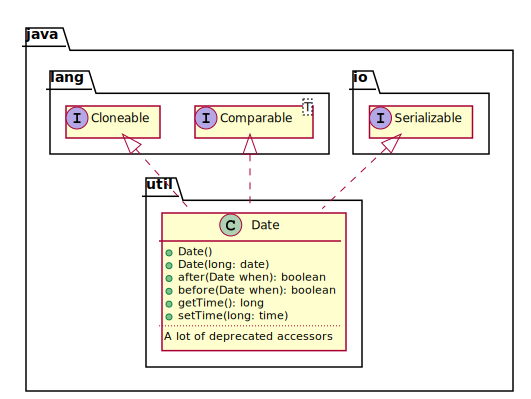
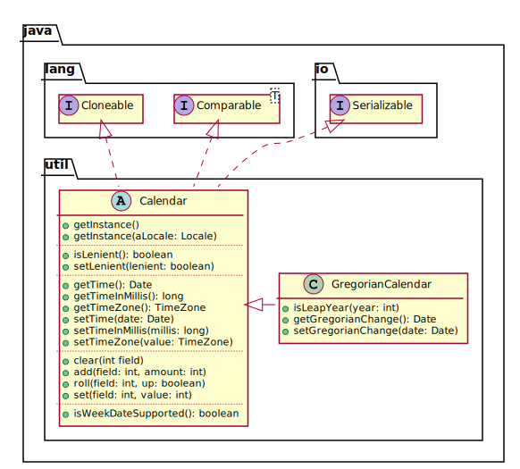
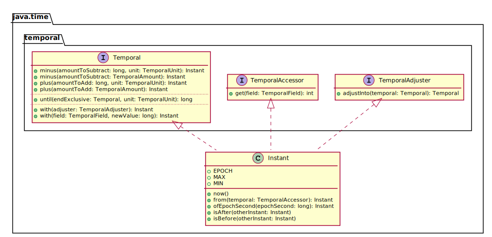
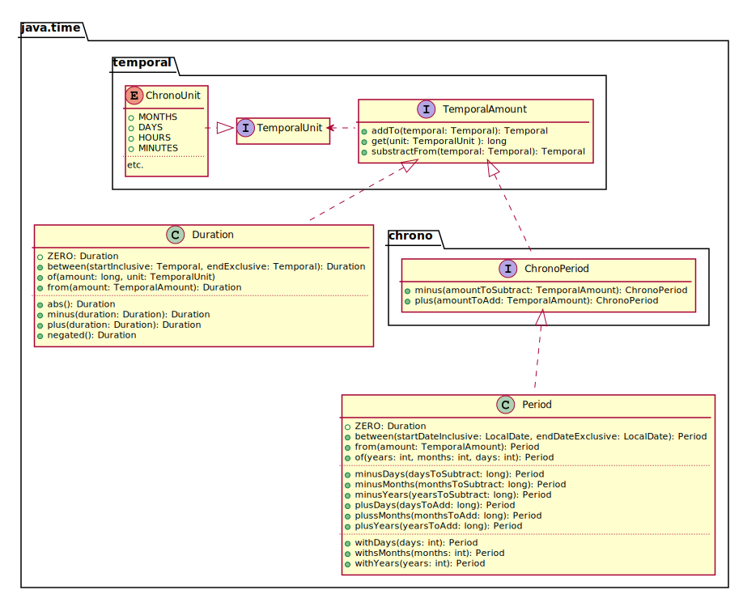
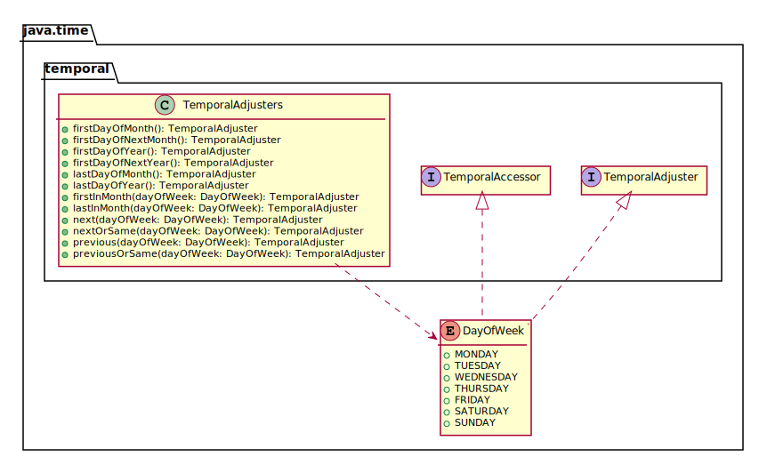
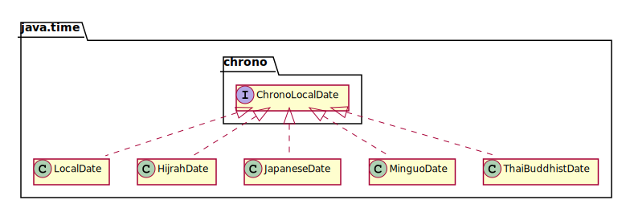
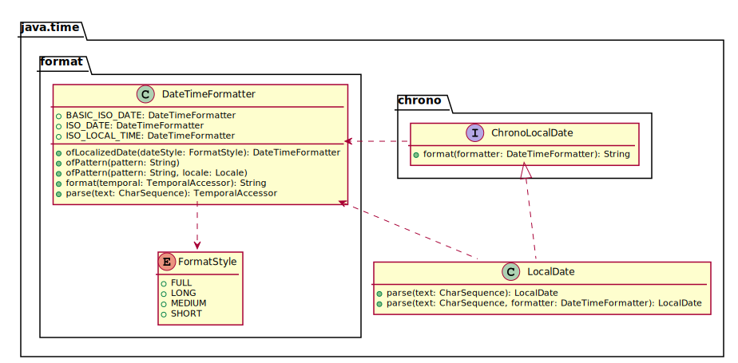

Date date = new Date();
int hours = date.getHours();
date.setHours(hours + 1);La modélisation du temps
L’API Date
Disponible depuis les premières versions de Java
Très déconseillée
La classe Date
The class Date represents a specific instant in time, with millisecond precision.https://docs.oracle.com/javase/7/docs/api/java/util/Date.html
— JavaDocs
— JavaDocs

Exemple d’utilisation
Problème avec Date
La classe confond la notion d’instant, et la mesure de cet instant dans un référentiel spécifique (p.e. le calendrier grégorien)
La classe Calendar
TheCalendarclass is an abstract class that provides methods for converting between a specific instant in time and a set of calendar fields such asYEAR,MONTH,DAY_OF_MONTH,HOUR, and so on, and for manipulating the calendar fields, such as getting the date of the next week.
https://docs.oracle.com/javase/7/docs/api/java/util/Calendar.html
— JavaDocs
— JavaDocs

Exemple d’utilisation
Calendar now = Calendar.getInstance();
int hours = now.get(Calendar.HOUR_OF_DAY);
now.set(Calendar.HOUR_OF_DAY, 1);
now.add(Calendar.HOUR_OF_DAY, 1);
now.roll(Calendar.HOUR_OF_DAY, 1);Problème avec Calendar
Calendar est une classe mutable: son état peut changer, ce qui rend compliqué son utilisation.
La nouvelle API Date/Time
Corrige les problèmes de
Dateet deCalendarDisponible depuis Java 8 dans le JDK
Directement inspiré de la librairie Joda Time
Instant
An instantaneous point on the time-line.
https://docs.oracle.com/javase/8/docs/api/java/time/Instant.html
— JavaDocs
— JavaDocs

Duration et Period
A time-based amount of time, such as '34.5 seconds'.
http://bit.ly/j-t-Duration
— JavaDocs
— JavaDocs
A date-based amount of time in the ISO-8601 calendar system, such as '2 years, 3 months and 4 days'.
http://bit.ly/j-t-Period
— JavaDocs
— JavaDocs

Exemple d’utilisation
Instant now = Instant.now();
Instant in5hours4minutes =
instant.plus(Duration.ofHours(5).plusMinutes(4));
| A date without a time-zone in the ISO-8601 calendar system, such as |
| A time without a time-zone in the ISO-8601 calendar system, such as |
| A date-time without a time-zone in the ISO-8601 calendar system, such as |

Exemple d’utilisation
LocalDate now = LocalDate.now();
LocalDate christmasThisYear =
LocalDate.of(now.getYear(), 12, 25);Temporal adjusters

Exemple d’utilisation
LocalDate now = LocalDate.now();
LocalDate thirdMondayFromNowOn = now
.with(TemporalAdjusters.next(DayOfWeek.MONDAY))
.with(TemporalAdjusters.next(DayOfWeek.MONDAY))
.with(TemporalAdjusters.next(DayOfWeek.MONDAY));Autres dates disponibles

Formatage et analyse

Exemple d’utilisation
LocalDate now = LocalDate.now();
DateTimeFormatter formatter =
DateTimeFormatter.ofPattern("yyyy/MM/dd");
String text = now.format(formatter);
System.out.println(text);